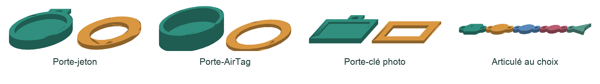

OBSERVER · EXPÉRIMENTER · EXPLIQUER
Préparer puis vérifier son objet imprimé
Choisis un porte-jeton, un porte-AirTag, un porte-clé porte-photo ou un porte-clé articulé de la forme de ton choix : animal ou autre objet. Le poisson en cinq segments est seulement un exemple et un modèle de secours. Personnalise la forme, prépare les pièces et vérifie ton objet.

✎ Garde ta feuille à côté de toi.Ordinateur : manipulations et mesures simulées. Papier : relevés, réponses, calculs et croquis. Matériel réel : essai complémentaire si disponible.
Des observations pour expliquer
- Q1 à Q4 : suis ta fiche. Conserve les réglages, les relevés et les explications sur papier.
Appuie ton explication sur une valeur, un changement observé ou une comparaison. Distingue ce que montre le modèle et ce qui reste à vérifier.